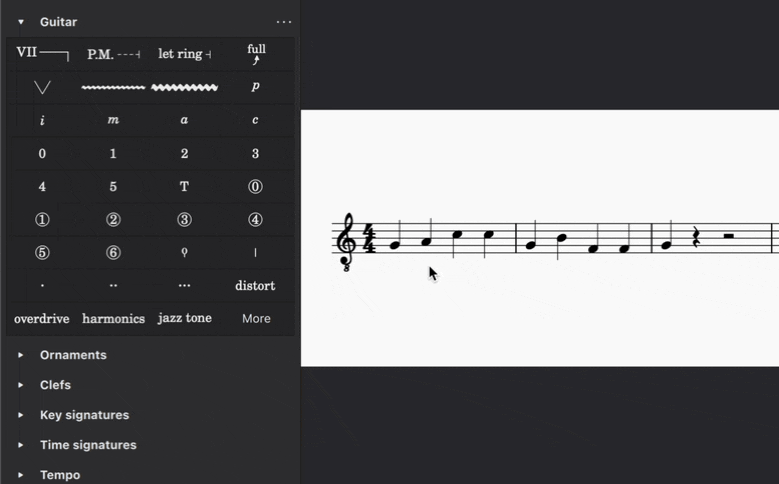
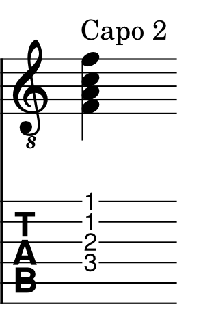
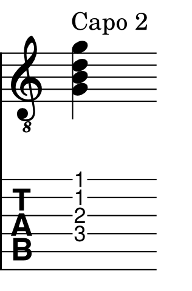
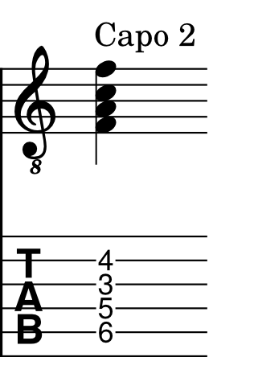
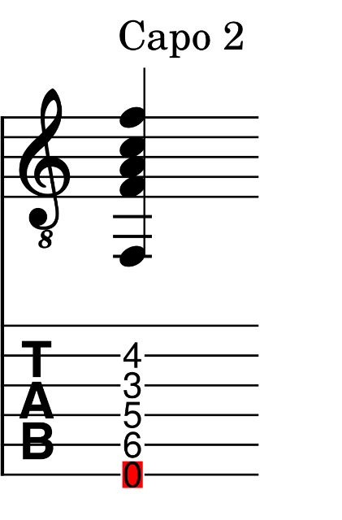

应用变调夹
概述
变调夹是一种可以夹在带品弦乐器（如吉他）指板上的装置。变调夹能有效缩短琴弦，使乐器以比正常更高的调演奏。
MuseScore 允许你通过在乐器谱表（或多个谱表）上添加 变调夹 标记来模拟这种效果。这会在保持音符（或品位记号）不变的情况下，自动将播放移调到所需音高。部分变调夹（即只有部分琴弦被缩短）也是可行的（见下文）。
将变调夹应用到你的乐谱
变调夹元素位于 吉他 面板中，该面板默认隐藏。
要找到变调夹元素：
- 单击面板顶部的 搜索面板 按钮，或使用快捷键 Ctrl+F9（macOS：Cmd+F9）。
- 输入“capo”。
或者，要永久显示 吉他 面板：
- 单击 添加面板
- 单击 吉他 旁边的 添加 按钮
注意： 添加面板 对话框目前无法被屏幕阅读器访问，因此视障用户必须使用第一种方法（通过搜索）。
将变调夹应用到谱表：
- 在乐谱中，选中要添加变调夹标记的音符或休止符。
- 在 吉他面板 中，选择 变调夹 元素。 * “Capo 1”文字会添加到乐谱中，并在其旁边出现一个 变调夹设置 弹出对话框。
- 在弹出对话框中调整变调夹的设置（见下文）。

调整变调夹设置
当你添加新的变调夹标记或在乐谱中选中现有变调夹标记时，会显示 变调夹设置 弹出对话框。
注意： 键盘用户可以按 Tab 键在 变调夹设置 弹出框出现后聚焦它，然后使用方向键浏览可用设置。如果再次按 Tab，弹出框会消失。要重新调出它，只需用 Alt+Left 取消选中变调夹标记，用 Alt+Right 重新选中它，然后按 Tab 聚焦弹出框。
打开或关闭变调夹
- 在 变调夹设置 对话框顶部选择 开启，表示应为乐器添加变调夹。
- 选择 关闭，表示应从乐器移除变调夹，并使播放恢复到原调。
默认情况下，如果选择 关闭，乐谱中的文字会变为“No capo”。
设置变调夹品位位置
品位 微调框中的数字指的是应应用变调夹的品位。例如，第 1 品将调上调高一个半音，第 2 品上调一个全音，依此类推。乐谱中的文字标签会自动更新。
例如，如果你选择第 4 品，乐谱中的文字会说“Capo 4”。
注意： 键盘焦点可能会卡在品位编辑控件中。如果发生这种情况，按 Up 和 Down 更改微调框的值，然后按 Right 移动到下方的 应用到琴弦 复选框。
设置移调行为
此功能仅在 MuseScore Studio 4.7 及更高版本中可用。
变调夹开/关 按钮下方的下拉菜单中有三个选项。
默认情况下，记谱和吉他谱品位标记会如同演奏者在空弦把位演奏一样显示。
例如，在下图中，变调夹已应用到第二品。当选择 记谱/吉他谱显示空弦把位 时，这个 F 大调和弦的最高发音音符被按在距离变调夹第一品的位置（距离吉他琴枕第三品的位置）。
播放时，会听到 G 大调和弦，因为第二品的变调夹将吉他上调了一个全音。

如果变调夹只是用于将音乐移调到比记谱更高的音高，请使用 记谱/吉他谱显示空弦把位。为了便于识读，吉他手可以继续如同在空弦把位演奏一样识读标准谱表或吉他谱谱表。
当选择 记谱显示实际发音音高 时，标准谱表上的音符将显示实际发音音高（在下例中为 G 大调和弦）。吉他谱继续如同吉他手在空弦把位识读一样显示演奏音高。
播放时，会听到 G 大调和弦。

如果查看吉他手实际演奏的音高很重要，请使用 记谱显示实际发音音高，例如在将吉他乐谱用作编曲源文件时，或在教学或协作场景中，其他演奏者或歌手需要参考实际发音音高进行自己的演奏时。
最后，当选择 不移调 时，标准谱表上的音高按原始输入显示。然而，吉他谱品位标记会被调整，以显示演奏者为发出标准谱表上记谱的音高所需弹奏的内容。这些品位标记相对于吉他琴枕显示。
在下例中，F 大调和弦的最高发音音符被按在第二弦的第四品，因为第一弦的第一品在变调夹之后，因此无法弹奏。
播放时，会听到 F 大调和弦。

如果变调夹用于简化指法，请选择 不移调 —— 例如当音乐写在难弹的调上，或为了减少手指跨度时。每当必须保持音乐的原调时，都使用此选项。
当选择 不移调 时，不再可弹奏的音符（因为它们位于变调夹本身之后）会以红色高亮显示。

指定部分变调夹的位置
应用到 部分中的切换开关让你可以指定变调夹只应用于某些琴弦。当至少有一根琴弦被关闭时，乐谱中的文字会改变以表示部分变调夹。
例如，如果你选择第 4 品，然后关闭第 1 弦和第 2 弦，乐谱中的文字会说“Partial capo: Fret 4 on strings 3, 4, 5, 6”。
自定义变调夹文字外观
要更改变调夹文字的措辞：
- 在弹出对话框中勾选 手动指定说明文字 复选框。
- 输入你希望在乐谱中显示的文字。
将变调夹文字放在谱表下方：
- 在 位置 下，选择 下方。

在乐谱中途更改变调夹设置
使用上述步骤，你可以在乐谱的不同位置根据需要改变变调夹设置。每个变调夹实例都会影响其之后所有音乐的移调，直到下一个变调夹标记。
注意：无法同时应用一个以上的变调夹。此功能计划在后续版本中推出。